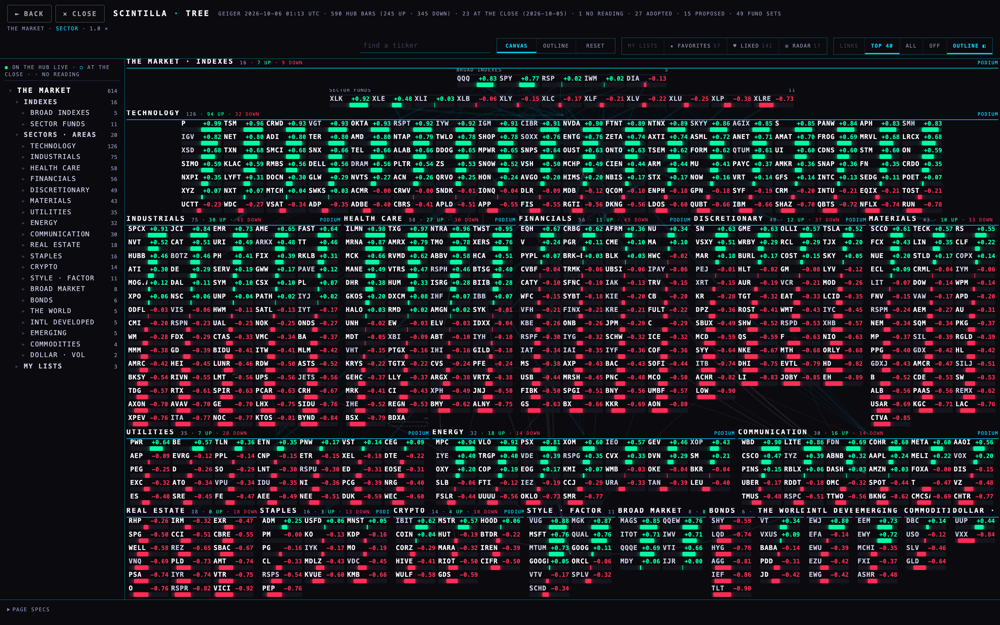
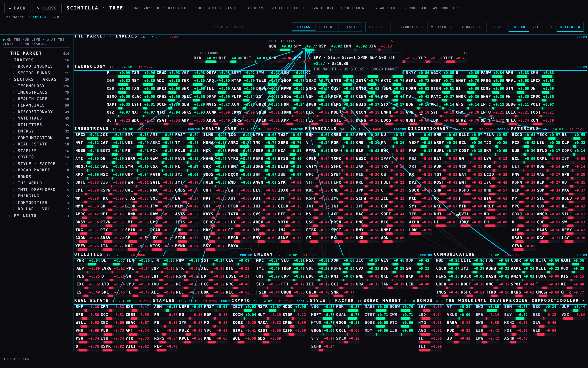
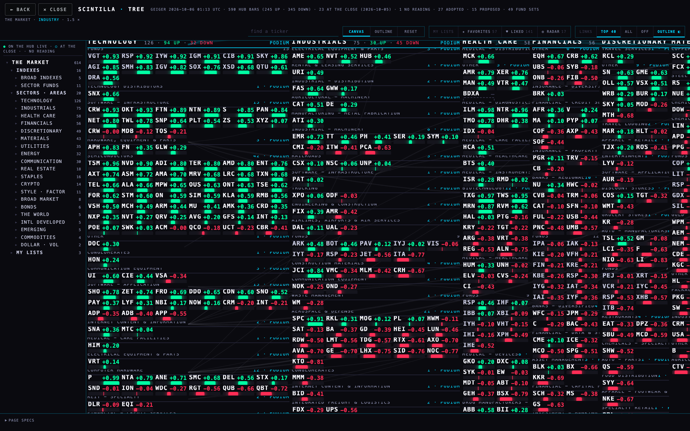
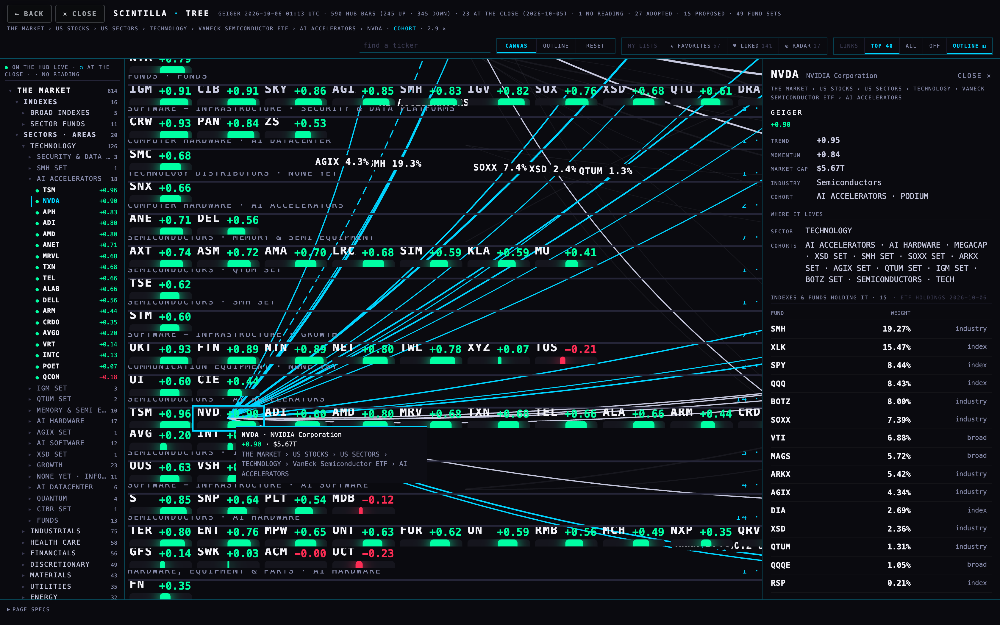
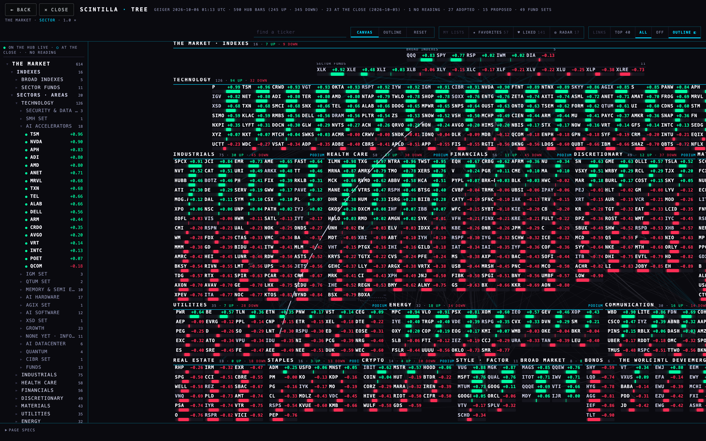
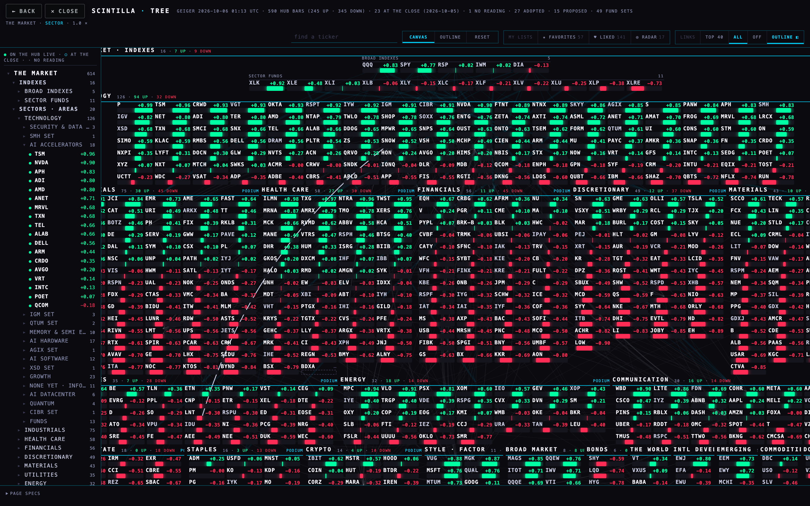

Alan, 5 Oct ~20:45: "the tree is not very organized yet … everything feels so separate. The ticker specific things only have trees within their stuff. I don't see the connection of things that are under technology to other areas of the market. Like the indexes."
The preview: deliverables/20261005/tree-connected-preview/index.html — T13's tree (the Hub's look, the 3D bow tie, all settled) with four things added. The pictures first, the plain words under each, the numbers after.
1 · The market's indexes sit above the sectors


The weight is the share of the whole fund (the fund's own holdings file: SPY 504 rows). What the Hub cannot place by sector is not re-scaled away: it prints on the index's card as "unclassified". IWM holds 1,988 small caps and only 56 of them are on the Hub, so 89 % of IWM is unclassified and its lines are thin. That is honest, not a bug.
2 · Technology opened

3 · A ticker's connections: NVDA

Suppliers and customers: no data exists on the Hub. No table holds supplier or customer links (the only suppliers table is Urth's landscaping suppliers, found by Q4's audit), the FMP supply-chain route is not loaded, and the peer lists are comps peers, not customers. The card says exactly that; nothing is drawn for them.
4 · A cohort link across sectors


Two cohorts in different sectors are linked when they share members (a name at home in one and also in the other), comps peers (a name in one has a peer in the other) or a narrow fund (a sector or industry fund holding names in both — the broad and style funds hold everything, so they are not counted or SPY would link every cohort to every other). The count on the line is the three added. AI HARDWARE ↔ AI POWER = 9: ETN in both, 5 peer pairs, 3 funds (AGIX, PAVE, XLI).
5 · The outline on the left
Market → Indexes → Sectors · Areas → Cohorts → Names, the same tree as a list. It follows the canvas: the row you are on is marked cyan and its branch opens; click a row and the canvas goes there (a sector opens, a cohort is framed, a name is found). Every name carries its mark: ● on the Hub live (a Geiger bar on the chart API), ○ at the close tier (the nightly scout Geiger, 5,925 names off the Hub), · no reading. OUTLINE ◧ hides the column; the canvas takes the width back (cells 73 px wide instead of 69 at home on the MacBook).
Counts
| indexes in the ring | 16 | 5 broad + 11 sector SPDRs, all on the tree and all in the holdings file |
| index → sector lines | 56 | one per index per sector it holds at ≥ 1 % |
| funds in the holdings file | 62 | etf_holdings, 12,795 rows, read 6 Oct 00:56 UTC; 460 served names are held by at least one |
| NVDA's lines | 22 | 1 sector + 1 cohort + 15 funds + 5 peers in other sectors |
| cross-sector cohort links | 310 | 46 by shared members, 210 by peers, 250 by narrow funds; TOP 40 drawn by default, ALL on request |
| names with a comps peer list | 589 | peer_sources, FMP ∪ Massive, loaded 1 Oct |
| tickers printed at home | 614 of 614 | 0 overlaps at every level (the T13 rule holds with the ring) |
| supplier / customer links | 0 | no data on the Hub — said on the card, nothing guessed |
Where each number comes from
data/connections-20261005.json, built by build-connections.mjs from four dated read-only exports in data/raw-20261005/ (the SQL inside each file): etf_holdings (the weights), company_profile.sector (FMP's sector for holdings that are not on the tree), peer_sources (the peers), ticker_cohorts (the multi-membership). The sector of a served name is tree.json's own. The maths is one small module, connections.mjs, that the page, the build and the tests all import. Nothing was written to any table.
What could be wrong
The holdings file is FMP's; a fund it lists only partly shows a lower total (DRAM, MAGS over 100 % — a file quirk, printed as is). The peer lists are the providers' comps peers, not a judgement. A cohort's "sector" is where it hangs on the tree (AI POWER under VPU under Utilities); a style cohort like MEGACAP hangs under Style · Factor, so its links count as cross-sector. The quiet lines are faint by design; on a bright screen they may read as texture — LINKS · OFF removes the cohort ones.
What was not done
No supplier / customer lines (no data). The live TREE tab and the T13 preview are untouched. Nothing deployed. Tests: tests/tree-connected-t14.test.mjs (5 tests); the suite stays at the Hub's known failures.
PAGE SPECS
Pictures: proof-t14.mjs, headless Chrome at 1680 × 1050 scale 2 (shots/t14-*.png, shots/t14-proof.json). Branch hub/t14-tree-connected-20261005 off T13's head ac86899.